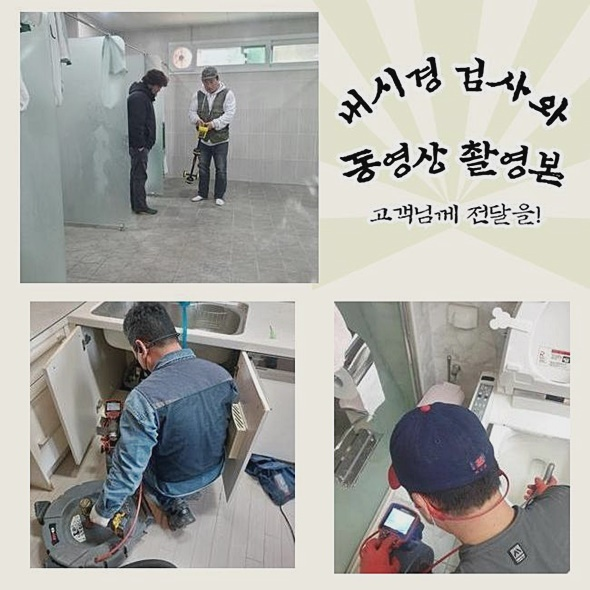
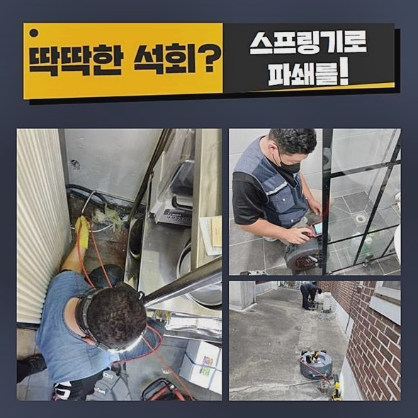
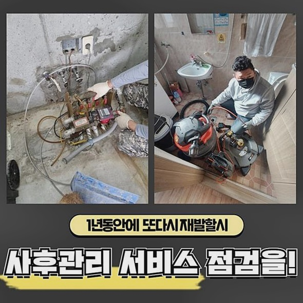
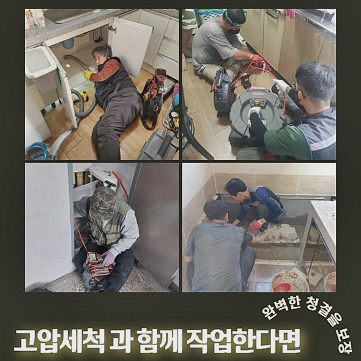
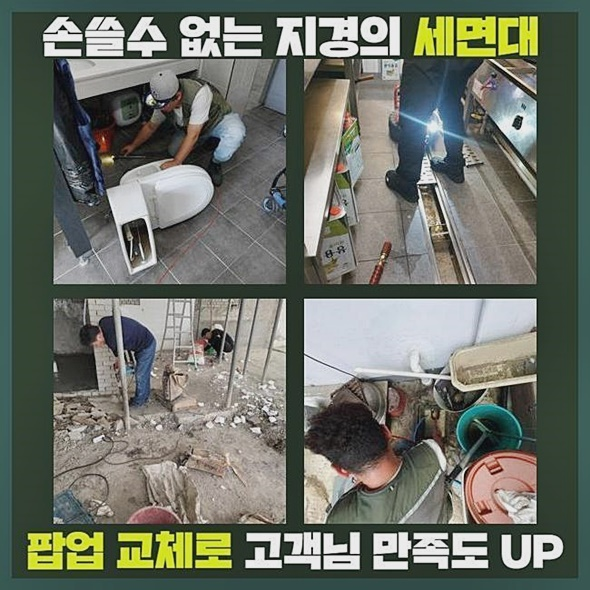
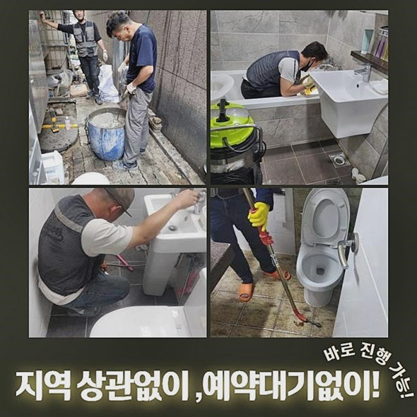
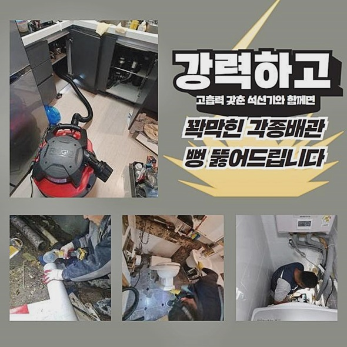

🏠 안양 부흥동싱크대뚫음 볌계동 하수구청소장비 배관공사
안양 싱크대막힘 전문 시공 후기

📋 작업 개요
- 위치: 안양
- 서비스 유형: 싱크대막힘, 하수구막힘, 배관막힘, 누수수리, 뚫는업체, 배관청소, 고압세척, 설비공사, 배관보수, 악취차단
- 작업 일시: 2024. 6. 10. 10:26
- 업체명: 하수구수사대 (010-5615-2118)
🔍 문제 상황
안양 부흥동싱크대뚫음 볌계동 하수구청소장비 배관공사
늘상 이용하던 하수구가 차단되는 사고가 나면 난감한 사태를 만들기에 그에 따른 불편감도 절감하게 될 것입니다
이번 글의 내용으로는 며칠 전 케어했던 하수구 실제 사례를 빌어 하수구문제의 원인과 절차를 숙지할 수 있는 기회를 가져볼까 합니다!
아파트나 빌라 등에서 쓰는 화장실 내부에는 물이 빠지는 곳이 두군데가 있습니다
세면대와 샤워구역으로 분산되어 배수가 원활하게 내려가야 하니까요
오늘 해결해 드렸던 현장은 뚫어져 있던 하수구 곳곳 마다 동시다발적으로 차단된 일로 전문 청소를 부탁하셨습니다
내부 물이 올라와서 그런 것인지 악취가 스믈스믈 올라온다 말씀하셨죠
용해제를 사용하여 부어봤으나 딱히 회복될 기미가 안보였죠
경미한 이물질이 원인이라면 근처에서 사실 수 있는 클리너로 처리될 때도 존재하지만 그 외의 현장을 마주할 때 저희가 무슨 방식을 적용하는지 함께 논의해 보겠습니다
상담을 거치고 직접 찾아가서 이슈가 발생했다 하신 욕실 내부로 성큼 들어갔습니다
두 하수구의 커버를 벗겨내고 내면 상태를 탐방해 보았습니다

🔎 원인 분석
💡 전문가 진단: 정밀 진단 장비를 사용하여 슬러지의 고착 여부를 판명하고 타격/세척 작업을 실시했습니다.
약물을 거듭 부으면서 애쓴 흔적이 보였는데 다량의 클리너가 그대로 적체돼있던 상황이었죠
저지대에 매립된 배관이라도 관찰하게 도와주는 맞춤 전문 내시경 장비를 주입하게 되는데 시야가 트이지 않아서 고여있는 오염수를 모두 없애주기 위해서 석션을 시행했습니다
해당 석션기는 흡수력이 엄청나서 수분과 기타 잘잘한 노폐물까지 빨아올려 폐기시켜주는 과업을 달성하여 잔여물을 삭제해 주고나서 검증 절차를 밟아야만 비로소 단계에 들어갈 수 있어요
샤워하는 공간 역시도 마저 점검을 끝냈습니다
관 내부를 탐색하니 머리카락 더미와 다양한 성분의 오염물이 배관 벽에 여기저기 흩어져 있었어요
쉽사리 떨어지지 않는 대상이 존재한다면 석션으로는 감당이 안될테고 플렉스샤프트로 세밀한 세척을 해서 일괄적인 배관의 정화를 해야합니다
고인 물을 빼준 덕분에 카메라로 포착된 구조가 표면화되었기에 이곳저곳을 둘러보며 작업에 들어갈 구획을 범주화하여 알아내고 방향성을 수립했어요
작업 전의 내시경은 핵심인데 깊이 매설된 배관에 관한 기본 정보들을 습득하여 당일 이행할 작업 전략과 적용할 장비 라인업도 미리 계획할 수 있게 만들어줍니다
카메라로 심층부에 있는 곳까지 내려가며 어디까지 분포가 되어 있는지도 놓치지 않고 살펴봅니다
실내 배관의 작업을 하다가도 오염원의 대상물이 야외에 이르기까지 감지될 때는 설명드리고 야외로 나아가게 됩니다
전천후로 쓰는 카메라는 긴 라인의 끝에 달려서 배관의 출입구에서 들어가도 연결된 깊은 지점까지도 생생하고 철저하게 관측하도록 허용해 준답니다

🔧 작업 과정
다양한 배관에 활용되는 플렉스 샤프트라는 장비는 결착된 고질적인 이물질들도 수습해 주는 고성능 장비예요!
바위처럼 단단한 고착된 물질들이 탈착하며 벽체를 긁히게 만들 가능성도 무시할 수 없는데 미연에 방지하도록 해주는 스마트한 기능을 갖췄습니다!
높은 압력으로 밀착된 무리하게 타격하는 수단보다는 소요 시간은 늘어나겠으나 용해성 액체를 적셔서 구조를 느슨하게 넓히고 진행을 해주고 있습니다
무엇보다 기존 배관과 시설물에 흠결을 가하지 않게 완성을 하는 것을 핵심적으로 초점을 두면서 배관을 닦아 나갑니다
배관벽에 자극을 주면 부서지거나 구멍나서 막힘 이상으로 위중한 상황으로 발전하니 아기 다루듯 살살 접근합니다
실금으로도 물이 새어나가고 간격이 점점 벌어지다보면 광범위한 교체가 불가피한 방대한 공사까지도 해야될 지도 모릅니다
욕실 안쪽의 양 배수구는 수북한 머리카락은 물론 탈각된 피부 세포도 가득했고 각종 세제들을 다량으로 사용하면서 물의 폐기를 필요로하므로 배수 시스템 내부에 여러 오염원들이 서로 융합된 채로 불가피하게 모아지게 됩니다
잘 쓰던 배관이 갑작스레 배수가 더뎌지면서 막힘 현상을 체감하시는 즉시 얼른 관통을 위한 청소를 받아보시기 바랍니다
결착력이 높게 집적된 불순물 덩어리는 시기를 놓쳐 버린다면 석회 물질로 경화되어 배관의 통행이 차단되게 합니다 견고한 석회물질이 있는 곳을 통로를 확보하는 일은 부드러운 장애 요소를 없애는 작업보다 상당히 오래 지속되며 난해한 일입니다!
평균적인 욕실의 사용감과 독특한 구석이 감지되거나 역행하거나 누수같은 연관된 사항이 발견되면 필히 서둘러야 합니다
두 군데를 일시에 청소하여 아무래도 시간이 지연되긴 했습니다
자잘한 석회 알갱이부터 각질과 모발로 구성된 찌꺼기도 표적하여 깔끔히 정돈했네요
통수가 제대로 확보됐는지 재조사 후 내시경으로 최종으로 점검해 줬습니다
배관의 전면 청소를 원활히 끝내서 다시 태어난 배관처럼 짱짱하게 작동되는 걸 보고 이번에 담당한 현장도 홀가분한 기분을 느끼면서 마무리 짓게 되었습니다
보통 때는 제약없이 쓰던 상황에서 불현듯 소통이 중단되면 주변에서 얻을 수 있는 청소 도구로 접근해 보시는 것도 꽤나 유익한 선택지입니다!
잦은 빈도로 배관의 고장이 일어난다면 전문진이 집행하는 배관 청소 서비스를 받아서 쾌적하게 새롭게 단장하는 것이 최선이긴 하답니다
게다가 욕실은 무해한 환경에 초점을 둬야 하며 청량함을 확보해야만 합니다


✅ 작업 완료
배관을 깨끗하게 만드니 올라오던 하수구 악취도 한 점 남김없이 소멸됐어요!
실내의 다양한 하수구는 비정상적인 것을 인지해도 무심코 지나쳐 버리는데 구성원들의 위생을 위하여 정기적으로 작동 상황을 확인하는 행동을 습관화 해보세요
막힘 뚫음은 당연하고 그밖의 배관 개선과 악취방지 조치 누수탐지와 보수까지 책임져 드리고 있기때문에 말끔하게 완수가 가능해요!
알려주신 주소지로 가서 효과적인 방식으로 보수해드리니 아무리 늦은 시간이라도 망설임 없이 향하겠습니다
정직한 가격 설정으로 심적인 부담감을 경감시켜드리니 저희 손에 맡겨주세요!




⚠️ 베란다 누수 및 방수 관리 방법
- ✅ 비가 많이 올 때 창틀 주변이나 아래층 천장에 얼룩이 생기는지 정기적으로 확인해 보세요.
- ✅ 우수관 주변 실리콘 마감이 들뜨거나 깨진 틈새가 있는지 손상 여부를 수시로 체크하세요.
- ✅ 베란다 바닥 타일의 줄눈(메지)이 소실되면 그 틈으로 물이 침투하여 누수가 유발됩니다.
- ✅ 누수 의심 증상 발견 시 방치하면 아래층 손실이 커지므로 즉시 전문가의 진단을 받으십시오.
💡 핵심 정리
- 확실한 장비 작업(내시경 점검 및 샤프트 스케일링)으로 원인을 뿌리 뽑습니다.
- 작업 후 1년 이내에 동일한 부위 재발 시 100% 무상 A/S 서비스를 보장합니다.
- 서울 · 경기 · 인천 전 지역에 24시간 언제든 긴급 출동할 수 있도록 항시 대기 중입니다.
❓ 자주 묻는 질문 (FAQ)
🚨 안양 싱크대막힘 문제로 고민이신가요?
정확한 원인 진단과 확실한 시공으로 재발 없는 해결을 약속드립니다.
24시간 긴급 출동 | 서울 · 경기 · 인천 전지역 | 1년 내 재발 시 무상 A/S